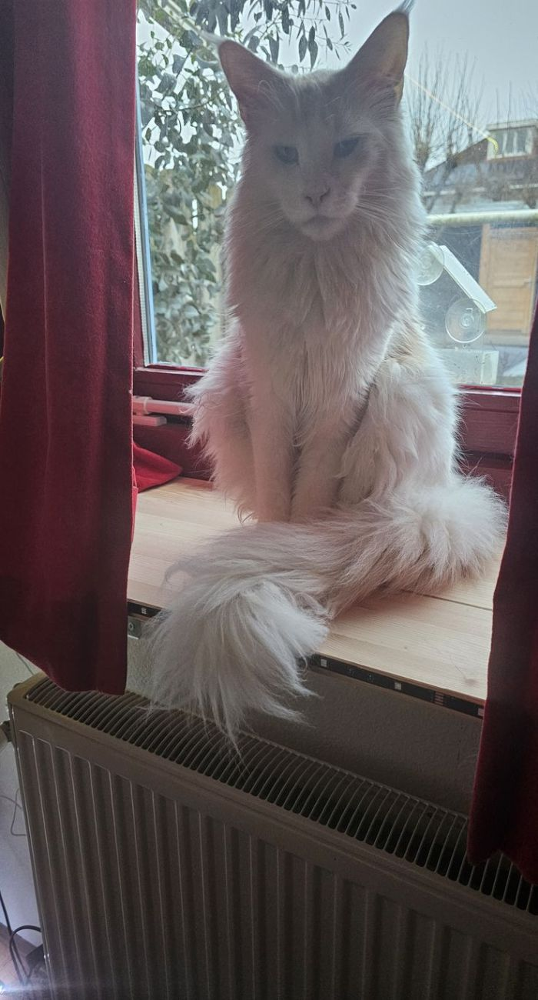
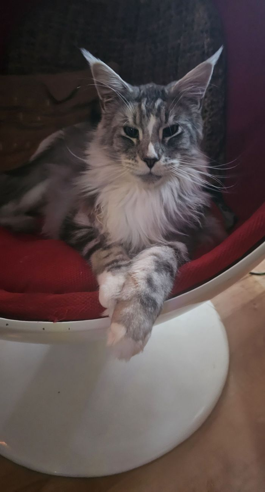

<html>
	<head>
		<title>BHW - Teachable Machine Image Model with upload</title>
	</head>
	<body style="background-color:powderblue;"></body>
	<center>
		<h1>Is it Phineas or Ferb?</h1>
<br>
<h4>You can upload any image, but only our two cats (Phineas & Ferb) and trained in this model.</h4>
<br>



		
		<input id="imageUpload" type="file" />

		<div>Is it Phineas or Ferb???</div>
		<div id="label-container"></div>
		<script src="https://cdn.jsdelivr.net/npm/@tensorflow/tfjs@1.3.1/dist/tf.min.js"></script>
		<script src="https://cdn.jsdelivr.net/npm/@teachablemachine/image@0.8/dist/teachablemachine-image.min.js"></script>
		<script type="text/javascript">
			// More API functions here:
			// https://github.com/googlecreativelab/teachablemachine-community/tree/master/libraries/image

			// the link to your model provided by Teachable Machine export panel
			const URL = './';

			let model, labelContainer, maxPredictions;

			// Load the image model 
			async function init() {
				const modelURL = URL + 'model.json';
				const metadataURL = URL + 'metadata.json';

				// load the model and metadata
				model = await tmImage.load(modelURL, metadataURL);
				maxPredictions = model.getTotalClasses();

				labelContainer = document.getElementById('label-container');
				for (let i = 0; i < maxPredictions; i++) {
					// and class labels
					labelContainer.appendChild(document.createElement('div'));
				}
			}

			async function predict() {
				// predict can take in an image, video or canvas html element
				var image = document.getElementById('imagePreview');
				const prediction = await model.predict(image, false);
				for (let i = 0; i < maxPredictions; i++) {
					const classPrediction =
						prediction[i].className + ': ' + prediction[i].probability.toFixed(2);
					labelContainer.childNodes[i].innerHTML = classPrediction;
				}
			}
		</script>

		<script src="https://cdnjs.cloudflare.com/ajax/libs/jquery/3.1.1/jquery.min.js"></script>
		<script type="text/javascript">
			function readURL(input) {
				if (input.files && input.files[0]) {
					var reader = new FileReader();
					reader.onload = function (e) {
						$('#imagePreview').attr('src', e.target.result);
						// $('#imagePreview').css('background-image', 'url(' + e.target.result + ')');
						$('#imagePreview').hide();
						$('#imagePreview').fadeIn(650);
					};
					reader.readAsDataURL(input.files[0]);
					init().then(() => {
						predict();
					});
				}
			}
			$('#imageUpload').change(function () {
				readURL(this);
			});
		</script>
		<h3>Next goals</h3>
<li> Save old upload results</li>
<li> Use a folder instead of upload button</li>
<li> Pick up images with MQTT from Frigate tagged as cat</li>
<li> Add the cartoon Phineas & Ferb to the model</li>
<li> Document on Github </li>
<li> Make Docker Compose and variables</li>
<br>
	</center>
	</body>
</html>